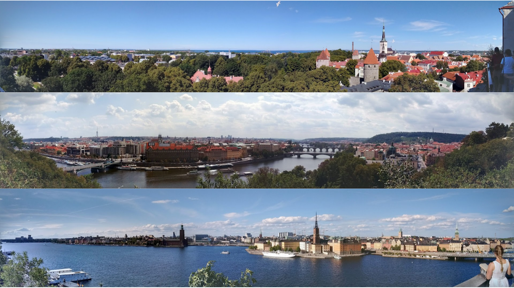
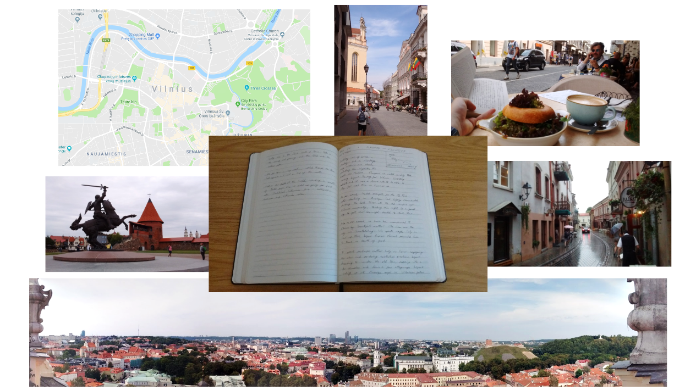
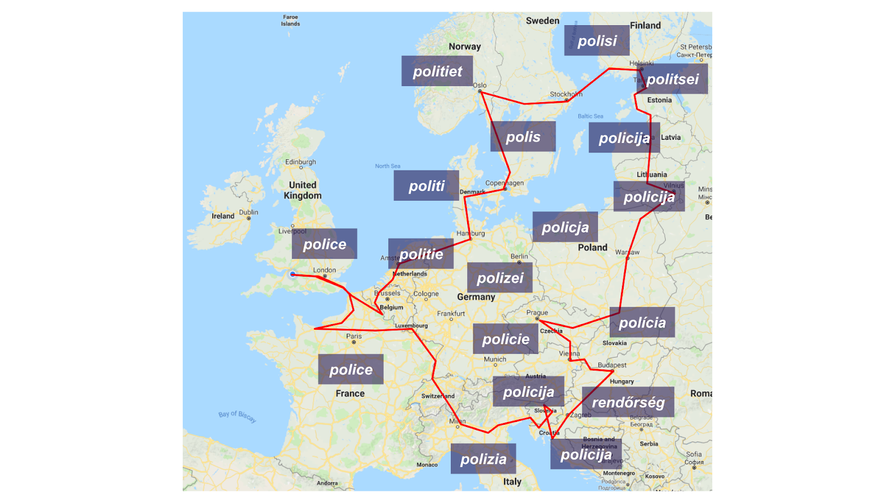
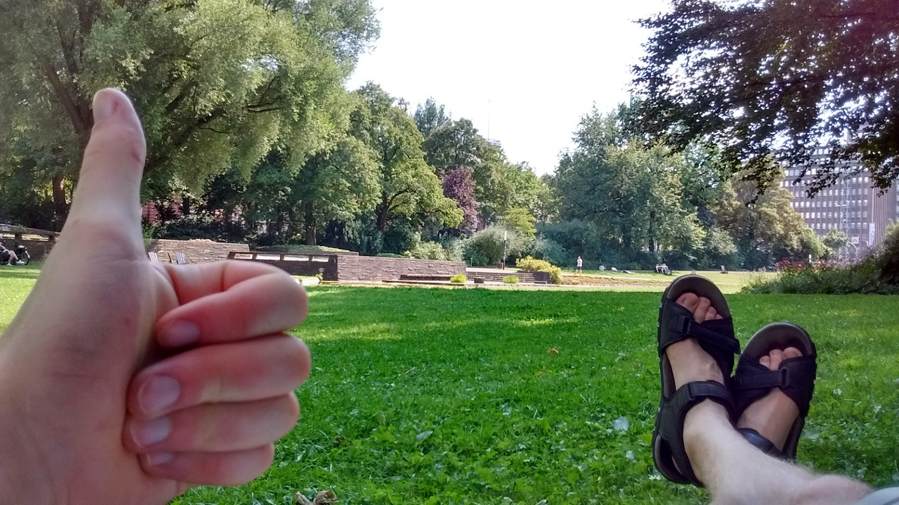

A year before I sat down here and started writing this sentence, I was about three months into a year-long work placement at Mango. I loved what I was doing, I loved the people I was doing it with, and I was generally having a great time.
But at some point last spring, people started to ask me when I was leaving. I couldn’t tell whether it was because they knew that at some point I’d have to go back to university to complete my course, or because they’d had enough of me already and wanted me to go away. Either way, whenever I mentioned that I was thinking about taking advantage of what will probably be the last long summer holiday of my life, everyone told me the same thing: I’d be a fool not to.
Therefore after months of meticulous planning, early one mid-July morning myself and a friend - summoning as much 18th-century spirit as possible - set off to complete a Grand Tour of the continent.
Over the course of 55 days, we visited 22 countries, we covered over 6000 miles of European highway, and due to the fact that I was very busy being on holiday, I wrote precisely 0 lines of code.
So I’m not writing about some cool project I’ve done, or some amazing new tech I’ve been researching, or really anything at all to do with code or a computer. Sorry. I suppose this piece should really be called “some things I learned which definitely have completely nothing at all to do with my job”.
Some things I learned which definitely have completely nothing at all to do with my job
1. Head for high ground
This is probably what you learn on day one in Army Commander School.
You’re in charge. The furious battle is raging on all sides. Suddenly, you realise that you are in serious danger of being completely overwhelmed. This is a good time to employ a tactic commonly referred to as “running away”.
But if this is a battle you want (or need!) to win, it’s probably not a good idea to run away forever. Your opponent isn’t going to hang around for a while wondering where you’ve gone, and then just decide “actually, yeah, fair enough, we lost, never mind”.
Instead, you should run away to somewhere nearby, but as high up as possible. This gives you a chance to widen your view: you can see where you’ve been, where you want to go, what’s going on right now, and how those three things relate to each other. After assessing the situation from this elevated position, it is much easier to see what needs to be done and to refocus your efforts accordingly.
If you want to be a top-level Army Commander one day, you can learn more from this. On your next conquest (or, in my case, unfamiliar city) find that high ground and go on a quick reconnaissance mission as early as possible: identify your goals, think about the best way to get to them, and scan the horizon for any threats (or scary grey clouds) which might be on their way towards you.
 Once you have the high ground, it’s over
2. Record what you’ve done
On the whole, we humans are pretty smart. We’re good at figuring out how to do stuff, and once we’ve figured out what to do, we’re good at actually doing it.
Having said that, the same is true of other primates. And crows. And dolphins. And beavers. And so on, and so on.
The reason why we are smarter is that we have an awesome thing called “language”. Language lets us share our ideas and our experiences with other humans, so that they don’t have to come up with the same ideas or go through the same experiences in order to have the same knowledge.
Even better: at some point a few thousand years ago, someone figured out how to convert language into something physical. As a result, those of us who are alive right now have access to virtually all the knowledge developed by all of humankind since that point.
SO WHY YOU NO USE IT? Write down everything! Write down what you’ve done, and how you’ve done it, and why you’ve done it, and why you’ve done it like that, and everything that went wrong before you got it right, and everything you think it could lead to.
Do it for yourself, in anticipation of the moment when in six months’ time you realise you’ve forgotten where you were or who you were with or what the name of that street was.
Do it for other people, so that they don’t have to drive round eastern Prague four times trying to find the car park which was marked in the wrong place on the map.
Do it for the people who will stumble across your hastily scrawled notes years from now and, with a sudden flash of inspiration, will use them as the foundation to build myriad new and wonderful things.
 My memory is terrible, but I wrote down all the embarrassing stories so that they’ll never be forgotten
3. Respect experience
Asking questions is a really really good thing to do. It’s one of the best ways to learn about things and you should never be afraid to ask about something you don’t understand.
However, it’s important to remember one thing: “always ask” is not the same as “always ask right now”.
If someone with more experience than you tells you to do something, and if you know that there is almost certainly a good reason, then even if you don’t know what that reason is… you should probably do the thing.
Wait until the pressure has eased a bit before demanding an explanation. You should still ask for one, but perhaps when everyone’s a little bit less stressed.
4. Call a spade a spade
Names can be controversial.
Pavement or sidewalk? Biscuit or cookie? Dinner or tea or supper? Bun or bap or roll? GIF or GIF?
But there are some names that virtually everyone agrees on. In particular, this tends to happen if it is important that everyone agrees on the name.
For example, “police” is an important concept: it represents protection, order, assistance, and a bunch of other useful words. Pretty much all European languages have almost exactly the same spelling and pronunciation for “police” as English does.
 How to say “police” in the 18 different European languages which we came across during our trip
This means that if you speak any one of these languages, you can travel to any place where they speak any one of the others; and even if you’re in an unfamiliar environment where your understanding is limited, you aren’t completely on your own. If you need help, you can yell “POLICE!”, and someone in a uniform will probably come running.
Unless you’re in Hungary, because Hungarian is very strange.
… actually, someone will come running even in Hungary, because virtually everyone speaks English as a second language. They have to, because very few people choose to learn Hungarian as a second language - it’s only really spoken in Hungary, and as previously mentioned, it really is very strange. Nevertheless, it is the first language of around 13 million people, so there’s a reasonable chance that at some point you’ll need to find a friendly Hungarian to do some translation for you.
I suppose there are two points to take from this little section. Firstly, if you call things by more or less the same name as everyone else does, then this will usually help to improve shared understanding and will aid communication. Secondly, people who can speak multiple languages - and especially less widely-spoken languages - are super super valuable!
5. Call a spade a spade, but that doesn’t mean you should assume/demand that everyone else is going to call every single item in their toolshed by exactly the same names as you call all the things which you have in YOUR toolshed
Just to add an important caveat to the previous section: sure, it’s helpful if someone speaks the same language as you, and even more exciting if you realise they speak it with the same accent. But once you’ve traded your initial stories, that gets boring quite quickly.
Plus, you’re definitely going to struggle to make new friends if you go around loudly insisting that everyone speaks to you in your language, and getting angry or patronising people if they get something “wrong”. Socialise, compromise, learn.
6. New is often exciting, but exciting doesn’t have to be new
Humans have been around for a while now, which means we’ve already gone to most places. If you want to go somewhere no-one else has been before then your options are already fairly limited. If you add the complication of getting there in the first place, and the fairly high probability that you won’t find anything particularly interesting there anyway, then it begins to look like a bit of a daunting prospect.
However.
You don’t have to go somewhere no-one else has been before. You can go to the same places and do the same things that someone else has already done, and as long as you’re enjoying yourself, it really doesn’t matter that someone has been there and done it before. There’s always a slightly different route to the next place, or a slightly different angle to view something from, or something to take inspiration from when you’re planning your next adventure.
Maybe one day in the future, you’ll decide that you want a bigger challenge. Then you can dust off your old maps and start thinking about making that expedition out into the middle of nowhere. But there are plenty of other wonderful places to go and things to do first - and honestly, some of those places really are well worth a visit.
If you see an awesome thing that someone else has already done, don’t be afraid to recreate it yourself (or to take photos of your friend recreating it)
7. Get out there and do stuff
There is so much out there.
No really, there is SO MUCH out there.
Go to places. Meet people. Talk to those people, then find more people. Read stuff, write stuff, look at things, show your friends, share opinions, debate stuff, be creative, demand feedback, ask questions, learn things, challenge yourself, pass on your passion, and while you’re busy doing all that never let anyone take away the thing that makes you you.
Go right now and carry on being awesome.
